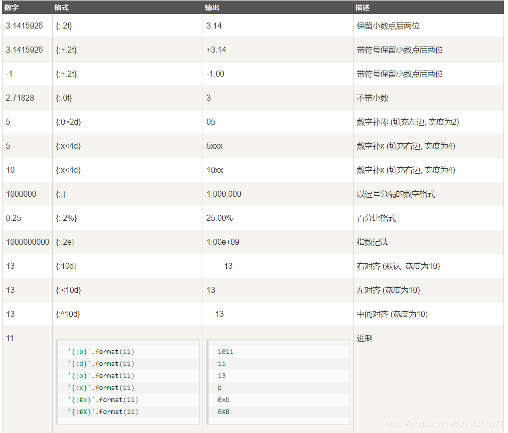

学完之后体会：
- 这部教程前面的基础部分讲解的很详细，很适合入门
- 对生信研究人员来说看到常用内建模块那一章就可以了，后面的内容在生信里应用不多
- 但是后半部分的内容才是Python真正的优势所在
Python基础
字符串和编码
ASCII编码：编码英文 Unicode编码：编码所有字符 UTF-8编码：可变长编码编码所有字符
最早的计算机在设计时采用8个比特（bit）作为一个字节（byte），所以，一个字节能表示的最大的整数就是255（二进制11111111=十进制255）
ASCII编码和Unicode编码的区别：ASCII编码是1个字节，而Unicode编码通常是2个字节
本着节约的精神，又出现了把Unicode编码转化为“可变长编码”的UTF-8编码,UTF-8编码把一个Unicode字符根据不同的数字大小编码成1-6个字节，常用的英文字母被编码成1个字节，汉字通常是3个字节，只有很生僻的字符才会被编码成4-6个字节
UTF-8编码有一个额外的好处，就是ASCII编码实际上可以被看成是UTF-8编码的一部分，所以，大量只支持ASCII编码的历史遗留软件可以在UTF-8编码下继续工作。
由于Python源代码也是一个文本文件，所以，当你的源代码中包含中文的时候，在保存源代码时，就需要务必指定保存为UTF-8编码。当Python解释器读取源代码时，为了让它按UTF-8编码读取，我们通常在文件开头写上这两行：
1
2
#!/usr/bin/env python3
# -*- coding: utf-8 -*-
用format()格式化字符串：str.format(),通过 {} 和 : 来代替以前的 %, 一颗栗子"{:d}".format(24)，更多例子如下

数据结构
list: 常用方法 append, insert, pop
tuple: 类似于list，但其中元素不可变
dict: 一个内置方法可以判断key是否存在 - dict.get(‘a’,-1),若不存在返回-1
set: 相当于一个没有value的字典，其中元素不可重复且无序，故可以进行交集并集等操作
列表是可变对象，对其进行的操作会直接改变其中的内容，元组和字符串还有dict的key是不可变对象
函数
可以import同一个文件夹中.py文件中的函数：from file.py import a_function
数据类型检查可以用内置函数isinstance()实现
Python的函数返回多值其实就是返回一个tuple
参数
必选参数(位置参数)
默认参数
默认参数：定义默认参数要牢记一点：默认参数必须指向不变对象！
1
2
3
4
5
6
7
8
9
10
11
12
13
14
15
16
17
18
19
20
21
22
23
24
25
26
27
28
29
30
31
32
33
34
35
36
37
38
39
40
# 默认参数，默认参数一定要放在位置参数后面
# 调用时，默认参数可以给名字也可以不给，不按顺序提供默认参数时必须要给名字
def power(x, n=2):
s = 1
while n > 0:
n = n - 1
s = s * x
return s
power(2, 5)
# 可变参数，在函数内部，可变参数接收到的是一个tuple
def calc(*numbers):
sum = 0
for n in numbers:
sum = sum + n * n
return sum
calc(1,2,3,4)
nums=[1,2,3]
calc(*nums)
# 关键字参数，在函数内部，可变参数接收到的是一个dict
def person(name, age, **kw):
print('name:', name, 'age:', age, 'other:', kw)
person('sunjh', 26, add="shenzhen", hobby="badminton")
jh = {add:'shenzhen', hobby:'badminton'}
person('sunjh', 26, **jh)
# 命名关键字参数：含参数名的关键字参数，使用命名关键字参数时，要特别注意，如果没有可变参数，就必须加一个`*`作为特殊分隔符，
# 如果有可变参数，就不用`*`分隔符；
# 命名关键字在调用时必须给出名字
def person0(name, age, *, city, job):
print(name, age, city, job)
person('sunjh', 26, city='shenzhen', job='student')
def person1(name, age, *args, city, job):
print(name, age, args, city, job)
# 可以设置缺省值
def person2(name, age, *, city='Beijing', job):
print(name, age, city, job)
在Python中定义函数可以组合使用上述五种参数，但是参数定义的顺序必须是：位置参数、默认参数、可变参数、命名关键字参数、关键字参数
对于任意函数，无论它的参数是如何定义的，都可以通过类似func(*args, **kw)的形式调用它
递归函数
使用递归函数的优点是逻辑简单清晰，缺点是过深的调用会导致栈溢出。
针对尾递归优化的语言可以通过尾递归防止栈溢出。尾递归事实上和循环是等价的，没有循环语句的编程语言只能通过尾递归实现循环。
Python标准的解释器没有针对尾递归做优化，任何递归函数都存在栈溢出的问题。
一个经典的递归函数问题：汉诺塔，尝试一下用递归函数实现吧！
高级特性
始终牢记，代码越少，开发效率越高
切片
迭代: enumerate函数
列表生成式: 在一个列表生成式中，for前面的if ... else是表达式，而for后面的if是过滤条件，不能带else
生成器(generator)
列表生成器：把列表生成式中的[]改成()即可
生成器函数：yield关键字
用生成器写一个杨辉三角吧！
1
2
3
4
5
def triangles():
L = [1]
while True:
yield L
L = [1] + [L[n] + L[n+1] for n in range(len(L)-1)] + [1]
迭代器
凡是可作用于for循环的对象都是Iterable类型
可以被next()函数调用并不断返回下一个值的对象称为迭代器：Iterator。
把list、dict、str等Iterable变成Iterator可以使用iter()函数
函数式编程
函数就是面向过程的程序设计的基本单元
函数式编程就是一种抽象程度很高的编程范式，纯粹的函数式编程语言编写的函数没有变量，因此，任意一个函数，只要输入是确定的，输出就是确定的，这种纯函数我们称之为没有副作用。而允许使用变量的程序设计语言，由于函数内部的变量状态不确定，同样的输入，可能得到不同的输出，因此，这种函数是有副作用的。
函数式编程的一个特点就是，允许把函数本身作为参数传入另一个函数，还允许返回一个函数！
高阶函数
函数本身也可以赋值给变量，即：变量可以指向函数
既然变量可以指向函数，函数的参数能接收变量，那么一个函数就可以接收另一个函数作为参数，这种函数就称之为高阶函数
编写高阶函数，就是让函数的参数能够接收别的函数。
map/reduce
map()函数接收两个参数，一个是函数，一个是Iterable，map将传入的函数依次作用到序列的每个元素，并把结果作为新的Iterator返回
reduce把一个函数作用在一个序列[x1, x2, x3, ...]上，这个函数必须接收两个参数，reduce把结果继续和序列的下一个元素做累积计算
一个将字符串转化成整数的函数
1
2
3
4
5
6
7
8
9
10
from functools import reduce
DIGITS = {'0': 0, '1': 1, '2': 2, '3': 3, '4': 4, '5': 5, '6': 6, '7': 7, '8': 8, '9': 9}
def char2num(s):
return DIGITS[s]
def str2in(s):
return reduce(lambda x, y: x * 10 + y, map(char2num, s))
一个将字符串转化成浮点数的函数
1
2
3
4
5
6
7
8
9
10
11
12
13
14
from functools import reduce
DIGITS = {'0': 0, '1': 1, '2': 2, '3': 3, '4': 4, '5': 5, '6': 6, '7': 7, '8': 8, '9': 9}
def char2num(s):
return DIGITS[s]
def str2float(s):
i = s.index('.')
n = len(s) - i - 1
f1 = reduce(lambda x, y: x * 10 + y, map(char2num, s[:i]))
f2 = reduce(lambda x, y: x * 10 + y, map(char2num, s[i+1:]))
return f1 + f2 / (10 ** n)
filter
filter()函数用于过滤序列,filter()把传入的函数依次作用于每个元素，然后根据返回值是True还是False决定保留还是丢弃该元素
产生一个素数序列
1
2
3
4
5
6
7
8
9
10
11
12
13
14
15
16
17
18
19
20
21
22
23
24
25
26
def _odd_iter():
n = 1
while True:
n = n + 2
yield n
def _not_divisible(n):
return lambda x: x % n > 0
def primes():
yield 2
it = _odd_iter() # 初始序列
while True:
n = next(it) # 返回序列的第一个数
yield n
it = filter(_not_divisible(n), it) # 构造新序列
# 打印1000以内的素数:
for n in primes():
if n < 1000:
print(n)
else:
break
筛选回数
1
2
3
4
5
6
7
8
9
10
11
12
13
14
15
16
17
18
19
20
21
22
23
24
25
def is_palindrome(n):
n = str(n)
l = len(n)
if l == 1:
return True
elif l % 2 == 0:
index = int(l/2)
for i in range(index):
if n[i] != n[-(i+1)]:
return False
return True
else:
index = int((l-1)/2)
for i in range(index):
if n[i] != n[-(i+1)]:
return False
return True
# A simpler way:
def is_palindrome(n):
return n == int(str(n)[::-1])
huisu = list(filter(is_palindrome, [i for i in range(200)]))
sorted
sorted()函数可以对list进行排序,它可以接收一个key函数来实现自定义的排序
返回函数
高阶函数除了可以接受函数作为参数外，还可以把函数作为结果值返回。
返回求和的函数
1
2
3
4
5
6
7
8
9
10
11
def lazy_sum(*args):
def sum():
ax = 0
for n in args:
ax = ax + n
return ax
return sum
f = lazy_sum(1, 3, 5, 7, 9)
f()
注意一点，当我们调用lazy_sum()时，每次调用都会返回一个新的函数，即使传入相同的参数
闭包（Closure）- 闭包的意义是什么？当一个函数返回了一个函数后，其内部的局部变量还被新函数引用
返回闭包时牢记一点：返回函数不要引用任何循环变量，或者后续会发生变化的变量。
使用闭包，就是内层函数引用了外层函数的局部变量。如果只是读外层变量的值，我们会发现返回的闭包函数调用一切正常.但是，如果对外层变量赋值，由于Python解释器会把x当作函数fn()的局部变量，而x没有提前定义，它会报错.
使用闭包时，对外层变量赋值前，需要先使用nonlocal声明该变量不是当前函数的局部变量。
用闭包返回一个计数器函数，每次调用它返回递增整数
1
2
3
4
5
6
7
def createCounter():
count = 0
def counter():
nonlocal count
count = count + 1
return count
return counter
匿名函数
lambda: 匿名函数有个限制，就是只能有一个表达式，不用写return，返回值就是该表达式的结果
装饰器 - Decorator
函数也是一个对象，而且函数对象可以被赋值给变量
本质上，decorator就是一个返回函数的高阶函数
借助Python的@语法，把decorator置于函数的定义处
一个栗子
1
2
3
4
5
6
7
8
9
10
def log(func):
def wrapper(*args, **kw):
print('call %s():' % func.__name__)
return func(*args, **kw)
return wrapper
@log
def now():
print('2015-3-25')
把@log放到now()函数的定义处，相当于执行了语句：now = log(now)
如果decorator本身需要传入参数，那就需要编写一个返回decorator的高阶函数
1
2
3
4
5
6
7
8
9
10
11
12
def log(text):
def decorator(func):
def wrapper(*args, **kw):
print('%s %s():' % (text, func.__name__))
return func(*args, **kw)
return wrapper
return decorator
@log('execute')
def now():
print('2015-3-25')
Python内置的functools.wraps把原始函数的__name__等属性复制到wrapper()函数中
1
2
3
4
5
6
7
8
9
10
11
import functools
def log(text):
def decorator(func):
@functools.wraps(func)
def wrapper(*args, **kw):
print('%s %s():' % (text, func.__name__))
return func(*args, **kw)
return wrapper
return decorator
exercise - 打印该函数的执行时间decorator
1
2
3
4
5
6
7
8
9
10
11
12
13
14
def metric(fn):
@functools.wraps(fn)
def wrapper(*args, **kw):
start = time.time()
r = fn(*args, **kw)
print('{:s} executed in {:s} ms'.format(fn.__name__, time.time() - start))
return r
return wrapper
@metric
def fast(x, y):
time.sleep(0.0012)
return x + y
偏函数
简单总结functools.partial的作用就是，把一个函数的某些参数给固定住（也就是设置默认值），返回一个新的函数，调用这个新函数会更简单
1
2
import functools
int2 = functools.partial(int, base=2)
模块
在Python中，一个.py文件就称之为一个模块（Module）
为了避免模块名冲突，Python又引入了按目录来组织模块的方法，称为包（Package）
请注意，每一个包目录下面都会有一个__init__.py的文件，这个文件是必须存在的，否则，Python就把这个目录当成普通目录，而不是一个包。可以有多级目录，组成多级层次的包结构
模块名不要和系统模块名冲突，最好先查看系统是否已存在该模块，检查方法是在Python交互环境执行import abc，若成功则说明系统存在此模块
自己创建模块时要注意命名，不能和Python自带的模块名称冲突。例如，系统自带了sys模块，自己的模块就不可命名为sys.py，否则将无法导入系统自带的sys模块
理解一下这两行代码,假设这两行代码在一个hello模块中
1
2
if __name__=='__main__':
test()
当我们在命令行运行hello模块文件时，Python解释器把一个特殊变量__name__置为__main__，而如果在其他地方导入该hello模块时，if判断将失败，因此，这种if测试可以让一个模块通过命令行运行时执行一些额外的代码，最常见的就是运行测试。
公开的（public）函数和变量名可以被直接引用
类似__xxx__这样的变量是特殊变量，可以被直接引用，但是有特殊用途
非公开的（private）的函数或变量通过加一个前缀_来定义，类似_xxx和__xxx，他们不应该被直接引用，很好的代码封装和抽象
外部不需要引用的函数全部定义成private，只有外部需要引用的函数才定义为public
模块搜索路径，默认情况下，Python解释器会搜索当前目录、所有已安装的内置模块和第三方模块，搜索路径存放在sys模块的path变量中，如果我们要添加自己的搜索目录可以直接修改sys.path
面向对象编程
面向对象编程——Object Oriented Programming，简称OOP，是一种程序设计思想。OOP把对象作为程序的基本单元，一个对象包含了数据和操作数据的函数
自定义的对象数据类型就是面向对象中的类（Class）的概念，类有属性和方法
一个简单的Student类
1
2
3
4
5
6
7
8
9
10
11
class Student(object):
def __init__(self, name, score):
self.name = name
self.score = score
def print_score():
print("{:s} {:d}".format(self.name, self.score))
# 创建一个instance
bart = Student('Bart Simpson', 59)
类（Class）和实例（Instance）
class后面紧接着是类名，即Student，类名通常是大写开头的单词，紧接着是(object)，表示该类是从哪个类继承下来的，通常，如果没有合适的继承类，就使用object类，这是所有类最终都会继承的类。
__init__方法，在创建实例的时候，需要强制绑定一些必须的属性。注意到__init__方法的第一个参数永远是self，表示创建的实例本身，因此，在__init__方法内部，就可以把各种属性绑定到self，因为self就指向创建的实例本身。
类中所有方法的第一个参数一定是self
Python允许对实例变量绑定任何数据，也就是说，对于两个实例变量，虽然它们都是同一个类的不同实例，但拥有的变量名称都可能不同
访问限制
私有变量：如果要让内部属性不被外部访问，可以把属性的名称前加上两个下划线__，在Python中，实例的变量名如果以__开头，就变成了一个私有变量（private），只有内部可以访问，外部不能访问
但是如果外部代码要获取name和score怎么办？可以给Student类增加get_name和get_score这样的方法
如果要修改属性，可以给类增加set_方法，这样可以在修改属性时对参数做检查
1
2
3
4
5
6
7
8
9
10
11
12
13
14
15
class Student(object):
...
def get_name(self):
return self.__name
def get_score(self):
return self.__score
# 对传入参数做检查
def set_score(self, score):
if 0 <= score <= 100:
self.__score = score
else:
raise ValueError('bad score')
以一个下划线开头的实例变量名，比如_name，这样的实例变量外部是可以访问的，但是，按照约定俗成的规定，当你看到这样的变量时，意思就是，“虽然我可以被访问，但是，请把我视为私有变量，不要随意访问”
类也可以有属性，这个属性可以被类的所有实例访问，如果实例属性的名字和类属性的名字相同，实例属性会覆盖类属性
继承和多态
在OOP程序设计中，当我们定义一个class的时候，可以从某个现有的class继承，新的class称为子类（Subclass），而被继承的class称为基类、父类或超类（Base class、Super class）
继承: 子类获得了父类的全部功能，在继承关系中，如果一个实例的数据类型是某个子类，那它的数据类型也可以被看做是父类。但是，反过来就不行
多态: 当子类和父类都存在相同的方法时，子类的方法会覆盖父类的方法，在代码运行的时候，总是会调用子类的方法
著名的“开闭”原则: 对扩展开放, 对修改封闭
静态语言 vs 动态语言: Java是静态语言，Python是动态语言，动态语言的“鸭子类型”，它并不要求严格的继承体系，一个对象只要“看起来像鸭子，走起路来像鸭子”，那它就可以被看做是鸭子
获取对象信息
使用type()函数判断对象类型
isinstance()函数判断class的类型
如果要获得一个对象的所有属性和方法，可以使用dir()函数，它返回一个包含字符串的list
配合getattr()、setattr()以及hasattr()，我们可以直接操作一个对象的状态
面向对象高级编程
为了达到限制的目的，Python允许在定义class的时候，定义一个特殊的__slots__变量，来限制该class实例能添加的属性
1
2
class Student(object):
__slots__ = ('name', 'age') # 用tuple定义允许绑定的属性名称
使用__slots__要注意，__slots__定义的属性仅对当前类实例起作用，对继承的子类是不起作用的使用,除非在子类中也定义__slots__，这样，子类实例允许定义的属性就是自身的__slots__加上父类的__slots__
使用@property
Python内置的@property装饰器就是负责把一个方法变成属性调用的
1
2
3
4
5
6
7
8
9
10
11
12
13
class Student(object):
@property
def score(self):
return self._score
@score.setter
def score(self, value):
if not isinstance(value, int):
raise ValueError('score must be an integer!')
if value < 0 or value > 100:
raise ValueError('score must between 0 ~ 100!')
self._score = value
定义只读属性: 只定义getter方法，不定义setter方法就是一个只读属性
多重继承
很有用的性质：通过多重继承，一个子类就可以同时获得多个父类的所有功能
定制类
Python中有特殊用途的函数：
__str__、__repr__()，打印出易于读的示例__iter__, 返回一个可迭代的类__getitem__，使类像list那样可以按照下标取出元素__getattr__，动态返回一个属性，当调用不存在的属性时，Python解释器会试图调用__getattr__来尝试获得属性
使用枚举类
使用元类
错误、调试和测试
错误处理
try...except...finally...的错误处理机制: try后面是测试执行语句，若没有报错，则跳过except，若报错，try中错误之后的语句不再执行，报一个exception。用这个方法的好处是即使报错了后面的程序仍然可以运行
exception：Python的错误其实也是class，所有的错误类型都继承自BaseException，在使用exception时，父类错误会覆盖子类错误
常见的错误类型和继承关系在这
1
2
3
4
5
6
try:
print('try')
r = 10/0
print('result:' r)
except ZeroDivisionError as e:
print('except', e)
也可以用Python内置的logging模块记录错误信息
try…except可以捕获错误，raise可以抛出错误，例子
1
2
3
4
5
def foo(s):
n = int(s)
if n==0:
raise ValueError('invalid value: %s' % s)
return 10/n
调试
用断言(assert)代替print来检查和调试，启动Python解释器时可以用-O参数来关闭assert。一个例子
1
2
3
4
5
6
7
def foo(s):
n = int(s)
assert n!=0, "n is zero"
return 10/0
def main():
foo('0')
第二种方法是用logging，比较复杂，以后需要的时候再考虑使用
第三种是单步运行和断点：Python的调试器pdb可以让程序以单步方式运行，也可以用IDE
单元测试
“测试驱动开发”（TDD：Test-Driven Development）
可以用Python自带的unittest模块编写单元测试，其实是编写一个测试类，一个例子
1
2
3
4
5
6
7
8
9
10
11
12
13
14
15
16
17
18
19
20
21
22
23
24
25
26
27
28
29
30
31
32
33
34
35
36
import unittest
from mydict import Dict
class TestDict(unittest.TestCase):
def test_init(self):
d = Dict(a=1, b='test')
self.assertEqual(d.a, 1)
self.assertEqual(d.b, 'test')
self.assertTrue(isinstance(d, dict))
def test_key(self):
d = Dict()
d['key'] = 'value'
self.assertEqual(d.key, 'value')
def test_attr(self):
d = Dict()
d.key = 'value'
self.assertTrue('key' in d)
self.assertEqual(d['key'], 'value')
def test_keyerror(self):
d = Dict()
with self.assertRaises(KeyError):
value = d['empty']
def test_attrerror(self):
d = Dict()
with self.assertRaises(AttributeError):
value = d.empty
# 运行单元测试
if __name__ == '__main__':
unittest.main()
可以在单元测试中编写两个特殊的setUp()和tearDown()方法。这两个方法会分别在每调用一个测试方法的前后分别被执行
文档测试
Python内置的“文档测试”（doctest）模块可以直接提取注释中的代码并执行测试
IO编程
操作文件和目录
os模块, os.path模块可以让我们像在命令行中一样操作文件和目录
常用函数：os.path.abspath('.')，os.path.join()，os.path.split()，os.path.splitext(), os.listdir(), os.mkdir()
shutil模块可以看做是os模块的补充，比如copyfile()函数
序列化
我们把变量从内存中变成可存储或传输的过程称之为序列化，在Python中叫pickling，在其他语言中也被称之为serialization，marshalling，flattening等等，都是一个意思。
Python提供了pickle模块来实现序列化: pickle.dump(variable, file)序列化一个变量并存入文件, pickle.load(variable, file)从一个file-like object中反序列化一个对象为变量
把对象序列化为标准格式如JSON，因为JSON表示出来就是一个字符串，可以被所有语言读取，也可以方便地存储到磁盘或者通过网络传输
Python内置的json模块提供了非常完善的Python对象到JSON格式的转换: json.dumps(), json.loads()
如果要序列化一个类实例，需要把这个类转换为一个可序列化的字典，可以写一个函数转换也可以偷懒用print(json.dumps(s, default=lambda obj: obj.__dict__))
进程和线程
一个任务就是一个进程（Process）,进程内的“子任务”称为线程（Thread）
multiprocessing模块是跨平台版本的多进程模块,multiprocessing模块提供了一个Process类来代表一个进程对象。一个例子
1
2
3
4
5
6
7
8
9
10
11
12
13
from multiprocessing import Process
import os
def run_proc(name):
print("Run child process %s (%s)" % (name, os.getpid()))
if __name__=='__main__':
print("Parent process %s." % os.getpid())
p = Process(target=run_proc, args=('test'))
print("Child process will start")
p.start()
p.join()
print("Child process end")
如果要启动大量的子进程，可以用进程池的方式批量创建子进程
1
2
3
4
5
6
7
8
9
10
11
12
13
14
15
16
17
18
19
from multiprocessing import Pool
import os, time, random
def long_time_task(name):
print('Run task %s (%s)...' % (name, os.getpid()))
start = time.time()
time.sleep(random.random() * 3)
end = time.time()
print('Task %s runs %0.2f seconds.' % (name, (end - start)))
if __name__=='__main__':
print('Parent process %s.' % os.getpid())
p = Pool(4)
for i in range(5):
p.apply_async(long_time_task, args=(i,))
print('Waiting for all subprocesses done...')
p.close()
p.join()
print('All subprocesses done.')
子进程
进程间通信可以通过Queue、Pipes等实现
1
2
3
4
5
6
7
8
9
10
11
12
13
14
15
16
17
18
19
20
21
22
23
24
25
26
27
28
29
30
31
from multiprocessing import Process, Queue
import os, time, random
# 写数据进程执行的代码:
def write(q):
print('Process to write: %s' % os.getpid())
for value in ['A', 'B', 'C']:
print('Put %s to queue...' % value)
q.put(value)
time.sleep(random.random())
# 读数据进程执行的代码:
def read(q):
print('Process to read: %s' % os.getpid())
while True:
value = q.get(True)
print('Get %s from queue.' % value)
if __name__=='__main__':
# 父进程创建Queue，并传给各个子进程：
q = Queue()
pw = Process(target=write, args=(q,))
pr = Process(target=read, args=(q,))
# 启动子进程pw，写入:
pw.start()
# 启动子进程pr，读取:
pr.start()
# 等待pw结束:
pw.join()
# pr进程里是死循环，无法等待其结束，只能强行终止:
pr.terminate()
多进程
threading模块，启动一个线程就是把一个函数传入并创建Thread实例，然后调用start()开始执行,一个例子
1
2
3
4
5
6
7
8
9
10
11
12
13
14
15
16
import time, threading
def loop():
print('thread %s is running' % threading.current_thread().name)
n = 0
while n < 5:
n += 1
print('thread %s >>> %s' %(threading.current_thread().name, n))
time.sleep(1)
print('thread %s ended.' % threading.current_thread().name)
print('thread %s is running...' % threading.current_thread().name)
t = threading.Thread(target=loop, name="LoopThread")
t.start()
t.join()
print('thread %s ended.' % threading.current_thread().name)
Lock: 多线程编程，模型复杂，容易发生冲突，必须用锁加以隔离，同时，又要小心死锁的发生
多线程在Python中只能交替执行，即使100个线程跑在100核CPU上，也只能用到1个核, 故Python中应当通过多进程实现多核任务
ThreadLocal解决了参数在一个线程中各个函数之间互相传递的问题
多进程模式最大的优点就是稳定性高,缺点是创建进程的代价大
计算密集型 vs. IO密集型: 计算密集型任务同时进行的数量应当等于CPU的核心数，尽量用C语言编写
Python中单线程的异步编程模型称为协程
分布式进程
很有意思的特性，但是现在暂时没什么兴趣去深究这个，稍微理解下原理就可以：有一个进程作为调度者，将任务分布到不同机器的其他进程中，他们之间通过网络通信
正则表达式
教程中的总结很简练，需要的话可以随时回来查阅
在正则表达式中，如果直接给出字符，就是精确匹配。用\d可以匹配一个数字，\w可以匹配一个字母或数字，\s匹配空格， .可以匹配任意字符
要匹配变长的字符，在正则表达式中，用*表示任意个字符（包括0个），用+表示至少一个字符，用?表示0个或1个字符，用{n}表示n个字符，用{n,m}表示n-m个字符
由于'-'是特殊字符，在正则表达式中，要用'\'转义
用[]表示范围, A|B可以匹配A或B, ^表示行的开头, $表示行的结束
正则表达式还可以同来做字符串切分和分组
正则匹配默认是贪婪匹配，加个?就可以让\d+采用非贪婪匹配
常用内建模块
datetime模块
collections模块是Python内建的一个集合模块，提供了许多有用的集合类
namedtuple: namedtuple是一个函数，它用来创建一个自定义的tuple对象，并且规定了tuple元素的个数，并可以用属性而不是索引来引用tuple的某个元素deque: deque是为了高效实现插入和删除操作的双向列表，适合用于队列和栈default: 在key不存在时返回一个默认值，默认值是调用函数返回的，而函数在创建defaultdict对象时传入，如dd = defaultdict(lambda: ‘N/A’)默认返回NA，或dd=default(list())返回listOrderedDict: OrderedDict的Key会按照插入的顺序排列，不是Key本身排序, 可以构建一个一个FIFO（先进先出）的dict，当容量超出限制时，先删除最早添加的Key -LastUpdatedOrderedDictChainMap: ChainMap可以把一组dict串起来并组成一个逻辑上的dict, 应用程序传参时可以用ChainMap实现参数的优先级查找Counter: Counter是一个简单的计数器，例如，统计字符出现的个数
base64模块：Base64是一种任意二进制到文本字符串的编码方法，常用于在URL、Cookie、网页中传输少量二进制数据
struct模块：用来解决bytes和其他二进制数据类型的转换
hashlib模块提供了常见的摘要算法，如MD5，SHA1，摘要算法就是通过摘要函数f()对任意长度的数据data计算出固定长度的摘要digest，目的是为了发现原始数据是否被人篡改过，常用于验证用户登录
itertools模块提供了非常有用的用于操作迭代对象的函数
chain(): 可以把一组迭代对象串联起来，形成一个更大的迭代器groupby(): 把迭代器中相邻的重复元素挑出来放在一起,实际上挑选规则是通过函数完成的，只要作用于函数的两个元素返回的值相等，这两个元素就被认为是在一组的
一个例子，迭代求pi的近似值
1
2
3
4
5
6
7
8
9
def pi(N):
# solution 1
return sum([4/x if (x-1)%4==0 else -4/x for x in range(1, 2*N-1, 2)])
# solution 2
odds = itertools.count(1, 2)
od = itertools.takewhile(lambda x: x < 2*N-1, odds)
od = (4/x if (x-1)%4==0 else -4/x for x in od)
sum(od)
其他几个模块如contextlib, XML, urllib, HTMLParser等因为理解不深加上现在用的不多，暂时不记录
常用第三方模块
第三方模块大多都会在PyPI - the Python Package Index上注册，这些模块可用pip安装
这部分的内容也是大概过一下就可以了，暂时不做深入学习
网络编程
网络通信就是两台计算机上的两个进程之间的通信
电子邮件
一封电子邮件的旅程： 发件人 -> MUA -> MTA -> MTA -> 若干个MTA -> MDA <- MUA <- 收件人
异步IO
异步IO模型需要一个消息循环，在消息循环中，主线程不断地重复“读取消息-处理消息”这一过程
对于大多数IO密集型的应用程序，使用异步IO将大大提升系统的多任务处理能力